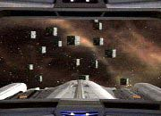

|

Clique aqui
para visitar o
Acervo de colunas


|
A Volta da Grande Aventura
Popular
tambm mostrou-se "Macrocosm", no qual a capit
vira uma herona do tipo Rambo para salvar a nave e toda a
tripulao. Sozinha, ela engatinha por corredores, corre,
escala, joga-se no cho, enfim, tira o atraso nos exerccios
fsicos. Os
Ferengis do episdio "The Price" (A Nova
Gerao, 3 ano) so encontrados por Janeway no fraco "False
Profits". Dois tripulantes passam pelo Pon Farr em "Blood
Fever" e, para fechar a terceira temporada com chave de
ouro, os Borgs finalmente mostram a cara em "The Unity"
e no extraordinrio "Scorpion", que marca a
sada de Jennifer Lien (Kes) do elenco fixo da srie.  01 - Basics, Part II Enquanto os oficiais da Voyager lutam para sobreviver em um planeta primitivo, um nico tripulante combate os Kazons, que tomaram o controle da nave. Nota: 5,0 02 - Flashback Tuvok vive as cenas de uma memria reprimida, ligada a sua primeira misso na Frota, sob o comando do renomado capito Sulu. Nota: 6,5 03 - The Chute Condenados por um crime que no cometeram, Paris e Kim podem passar o resto de suas vidas em uma priso infernal. Nota: 5,0 04 - The Swarm Enquanto a Voyager combate uma nuvem de naves aliengenas, Kes luta para impedir a deteriorao dos circuitos de memria do Doutor. Nota: 3,5 05 - False Profits A tripulao tenta libertar o povo do planeta Takar de dois Ferengis oportunistas fazendo-se passar por deuses. Nota: 2,0 06 - Remember Torres fica atormentada por uma srie de sonhos nos quais parece estar revivendo a vida de outra mulher. Nota: 3,5 07 - Sacred Ground Para salvar a vida de Kes, Janeway testa suas prprias crenas espirituais ao passar por um misterioso ritual de uma ordem religiosa aliengena. 08 - Futures End, Part I A Voyager visita a Los Angeles do sculo XX para tentar impedir que uma nave temporal destrua o Sistema Solar da Terra no sculo XXIX. Nota: 8,0 09 - Futures End, Part II A tripulao corre contra o tempo para impedir que um industrial do sculo XX cause um desastre no sculo XXIX. Nota: 7,0 10 - Warlord O corpo de Kes tomado pela mente de um lder poltico inescrupuloso, determinado a reconquistar o poder em seu planeta. Nota: 3,0 11 - The Q and the Grey Janeway se surpreende quando Q pede que ela seja a me de seu filho, e a capit levada ao centro de uma perigosssima guerra civil na Dimenso-Q. Nota: 6,0 12 - Macrocosm A Voyager infestada por um mcrovrus aliengena letal. Nota: 7,0 13 - Fair Trade Os esforos de Neelix em guiar a tripulao acabam levando-o a um perigoso grupo de contrabandistas. Nota: 5,0 14 - Alter Ego A obsesso de uma personagem do holodeck por Tuvok ameaa destruir a USS Voyager. Nota: 3,0 15 - Coda Janeway se encontra presa em um misterioso loop temporal, onde uma srie de eventos repetitivamente acabam com sua morte. Nota: 3,0 16 - Blood Fever BElanna sofre as influncias do Pon Farr aps um tripulante vulcano toc-la. Enquanto isso, Chakotay faz uma descoberta chocante sobre os invasores de um estranho planeta. Nota: 5,0 17 - Unity Chakotay se envolve com um grupo de ex-Borgs. Nota: 3,0 18 - Darkling O Doutor sofre graves efeitos aps adicionar diferentes programas a sua matriz hologrfica. Nota: 7,0 19 - Rise A tripulao da Voyager tenta ajudar o povo de um planeta bombardeado por asterides. Nota: 3,0 20 - Favorite Son Harry se convence que nativo do planeta Taresia, predominantemente habitado por mulheres. Nota: 1,0 21 - Before and After Kes fica confusa quando comea a saltar de volta no tempo. Nota: 8,5 22 - Real Life Enquanto Paris faz um vo perigoso sobre uma tempestade de energia subespacial, o Doutor vive alegrias e dores com sua nova famlia hologrfica. Nota: 8,0 23 - Distant Origin Um professor aliengena seqestra Chakotay para provar sua controversa teoria sobre a origem de sua espcie. Nota: 9,0 24 - Worst Case Scenario Uma holo-novela sobre um motim Maquis na Voyager se transforma em ameaa real quando uma verso hologrfica de Seska entra em cena. Nota: 7,0 25 - Displaced A USS Voyager tomada por uma raa aliengena e sua tripulao relocada para uma priso idlica. Nota: 3,5 26 - Scorpion, Part I Ao
entrar no tenebroso espao Borg, a Voyager se depra com um
inimigo ainda mais poderoso que a Coletividade, e a capit se v
forada a fazer uma aliana sem precedentes. Nota: 10,0
Daniel
Sasaki co-editor do Trek
Brasilis | ||||||||||||||||||||||||||||||||||||||||||||||||||||||||||||||||||||||||||||||||||||||||||||||||||||||||||||||||
 A
terceira temporada de Voyager foi marcada por mudanas
significativas no modo de se contar histrias. "Acho que
fomos bem-sucedidos na tarefa de restaurar um maior senso de
aventura, destacando a srie e trazendo de volta um pouco de
humor", disse Jeri Taylor, a principal produtora-executiva
daquele ano, em entrevista de 1997.
A
terceira temporada de Voyager foi marcada por mudanas
significativas no modo de se contar histrias. "Acho que
fomos bem-sucedidos na tarefa de restaurar um maior senso de
aventura, destacando a srie e trazendo de volta um pouco de
humor", disse Jeri Taylor, a principal produtora-executiva
daquele ano, em entrevista de 1997.